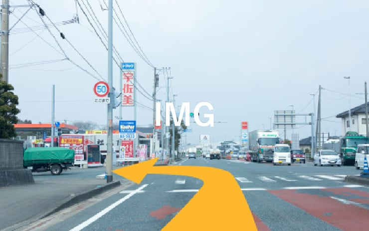
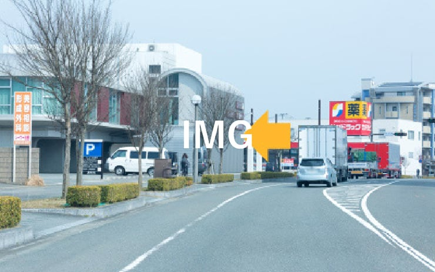
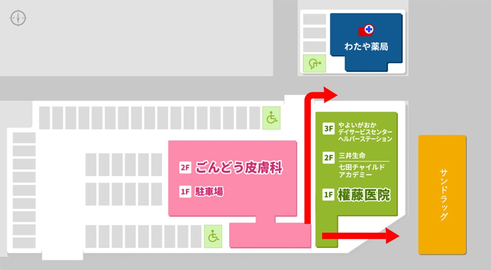

お車をご利用の場合
国道3号線からお越しの方
「弥生が丘入口交差点」を西へ折れ、450m直進してください。
「弥生が丘東交差点」の右側に当院がございます。

県道17号線（鳥栖筑紫野道路）からお越しの方
「柚比出口」から弥生が丘駅方面へおり、交差点を左折後約1km直進します。
「弥生が丘東交差点」手前に当院がございます。

駐車場・周辺ご案内
最大62代の収容の駐車場を完備しております。
また、周辺には大賀薬局、溝上薬局、わたや薬局、サンドラッグがございます。
